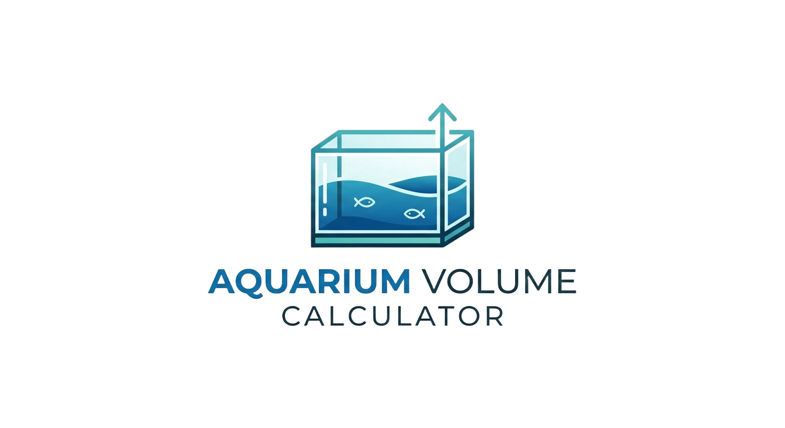

Aquarium PlanningConvert tank dimensions to liters and US gallons with a single click.
Whether you are setting up a new tank or performing routine maintenance, knowing your exact water volume is the most important step for successful fishkeeping. Our Aquarium Volume Calculator provides instant results in both US Gallons and Liters, helping you avoid common mistakes in the hobby.
The calculator uses standard geometry to determine the internal volume of a rectangular glass or acrylic tank:
US Gallons: (Length × Width × Height) ÷ 231
Liters: (Length × Width × Height) ÷ 1000
Note: This calculator assumes internal dimensions. If you are measuring from the outside, subtract the thickness of the glass (usually 0.25–0.5 inches) for a more accurate result.